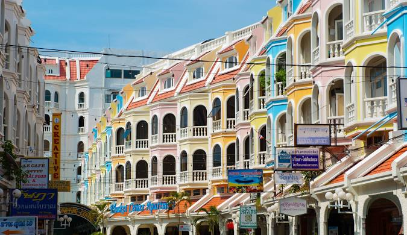
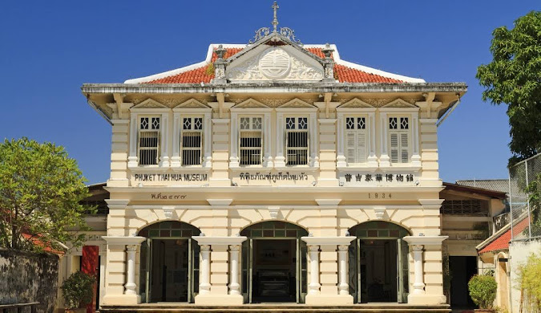

Bali


About Phuket
Phuket is an island and city in southern Thailand known for its beaches, nightlife, and many attractions.
Travel Tips for Phuket
- Best time to visit: April to October (dry season)
- Don’t miss the sunset at Patong Beach.
- Explore local markets for authentic crafts.
- Don't miss Big Buddha Phuket - 45-meter tall white marble statue of a Buddha that sits on a hill in Karon.
Book Now